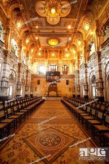

New Palace

It is dedicated to a fine collection of possessions of Chhatrapatis of Kolhapur like costumes, weapons, games, jewellery, embroidery and paraphernalia such as silver elephant saddles. A letter from the British Viceroy and Governor General of India is the other memorabilia. There is also one of Aurangzeb's swords at the Shahaji Chhatrapati Museum. One section has stuffed Tigers, Tiger heads, Wild Dog, Sloth Bear, staring Wild Buffalo, Lion, Black Panther, Wild Boar, Black Buck, a number of other Deer varieties, and a Himalayan Black Bear.

Darbar Hall
History
New Palace, Kolhapur is a palace situated in Kolhapur, in the Indian state of Maharashtra. The Palace took 7 years to complete, from 1877 to 1884,[1] costing about seven lakhs of rupees.[2] Being an excellent specimen of Indian architecture built in black polished stone, it has been an attraction for tourists. It has extensive premises with a garden, fountain and wrestling ground. The whole building is eight-angled and has a tower in the middle. The clock on it was fixed in 1877. At separate distances there are small towers. On every glass are painted the events of Chhatrapati Shivaji Maharaj's life, the founder of Maratha Empire. There is a zoo and a ground lake. Even today, it is the residence of Chhatrapati Shahu Maharaja, the direct descendant of Chhatrapati Shivaji Maharaja.